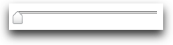

The Slider component is a UI control that enables the user to adjust values in a finite range along a horizontal or vertical axis. Typically, the Slider control is used in a web application as a rich, visual replacement for an input box that takes a number as input.
Using the
This section describes how to use the in further detail. It contains these subsections:
- Horizontal and vertical Sliders
- Slider Setup
- Setting and constraining the Slider value
- Slider events
- Skinning
Horizontal and vertical Sliders
Specify the Slider axis at construction
By Default, Sliders are horizontal. For a vertical Slider, set the axis attribute to "y" during construction.
These would be rendered like this:
Configuring the railSize
For both horizontal and vertical Sliders, the railSize attribute will control the length of the rail Node along the configured axis. railSize accepts any CSS size value string.
railSize : '100px'
railSize : '23em'
In the absence of a configured railSize, its value is defaulted from the width or height attribute (whichever is appropriate), then falling back to the current dimensions of the rail Node along the specified axis.
It is recommended to always specify railSize.
Slider Setup
DOM structure and instantiation
Like all YUI3 Widgets, the DOM structure used by a Slider instance starts with a boundingBox and contentBox. Inside the contentBox is a rail Node containing a thumb Node. Optionally, the thumb Node may also contain a thumbImage Node.
You can choose to include however much of this markup on your page that you wish. Slider will add any missing pieces for you. Here are a few ways to instantiate a Slider (focusing on its relationship to the DOM):
Thumb placement
The Slider thumb is positioned on the rail by aligning the center of the thumb to a given point. This means half the thumb will extend beyond the specified railSize on either end of the rail.
If this compromises your page layout, you can account for it in a number of ways with CSS, such as adding padding to the contentBox.
Using a thumbImage
In addition to accepting a Node reference or selector string, the thumbImage configuration will also accept a url to an image resource.
When a Slider is render()ed, but the configured thumbImage hasn't yet loaded, the completion of the render process is postponed until the image's load or error event fires.
In the intervening time, the Slider value can be modified and the thumb will be placed accordingly when available.
If, however, the url provided as the thumbImage value results in an error (e.g. 404), a default style will be applied so the Slider remains functional, though certainly less attractive.
Setting and constraining the Slider value
Setting and getting Slider values
Like any input interface, the most important thing about the Slider is the value. Though value is managed as an attribute, Slider provided two convenience methods for accessing it:
getValue()setValue(newVal)
Constraining Slider values
A Slider's value must be between the configured min and max attribute values.
By default, min is 0, max is 100 and value is 0.
min and max for vertical Sliders
Vertical Sliders associate the top edge of the rail with the min value and the bottom edge of the rail with the max. If you prefer values to increase from bottom to top, just flip the specified min and max values.
Slider events
Sliders fire the following events during operation:
| Event | When | Payload |
|---|---|---|
slideStart |
Beginning a thumb drag | { ddEvent: (drag:start event) } |
thumbDrag |
The thumb is being dragged | { ddEvent : (drag:drag event) } |
valueChange |
The value attribute is changed by any means | ddEvent : (drag:drag event) when dragging thumb. Otherwise, normal change event signature (newVal, prevVal, etc) |
valueSet |
After the value is changed via set("value", n) or setValue(n) |
{ changeEv : (valueChange event) } |
slideEnd |
Finishing a thumb drag | { ddEvent: (drag:end event) } |
This is not an exhaustive list. See the API docs for a complete listing.
Skinning
The Sam skin provides a minimal visualization in the form of one rail and thumb image for each vertical and horizontal Sliders, and the following simple CSS to apply the appropriate background image to the rail element:
| image | file | width | height |
|---|---|---|---|

| thumb-classic-x.png |
15 | 19 |

| thumb-classic-y.png |
18 | 13 |
rail-classic-x.png |
1 * | 4 | |
rail-classic-y.png |
3 | 1 * |
* rail images repeated for clarity.
When creating your own skin, keep in mind the thumb will move beyond the edges of the rail element in order to line up the thumb's center point. You are free to add additional DOM elements inside the contentBox, even wrapping the rail Node if necessary to achieve the look you're going for.
Also, you can forgo assigning a rail image to the rail Node in favor of decorating the contentBox, as was done in the Slider from markup example.